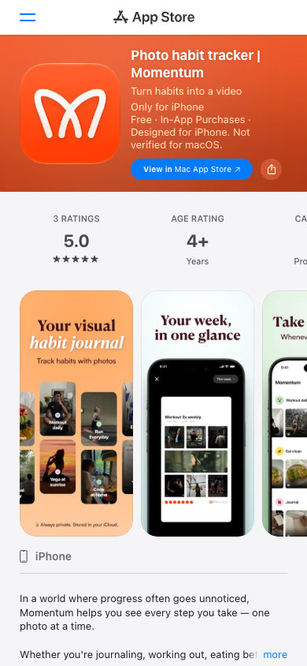
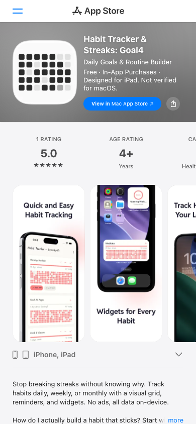

차곡
"사진으로 습관 기록"은 이미 존재하고(Momentum 등), "습관 그리드·공유 카드"도 따로 존재하지만(Goal4), 여러 습관을 한 장의 사진 타일 보드로 보고 → 월간 공유 이미지로 내보내는 조합은 확인된 서비스가 없다. 단, 대부분 iOS 앱이라 웹이라는 점도 차이다.
우리의 자리
사진 타일 보드로 여러 습관의 한 주·한 달을 한눈에 돌아보고 인스타에 올릴 수 있는, 습관 기록과 회고용 사진 그리드 서비스.
- 빈틈 · 기회
- 사진 습관 앱은 개별 습관 저널·영상으로, 그리드 앱은 사진 없이 색 칸으로만 간다. "습관 × 기간 사진 보드 + 인스타 공유 카드"는 비어 있다. 쉬는 날·체크만 한 날처럼 주기가 다른 습관을 칸 상태로 구분하는 것도 확인되지 않았다. 대부분 iOS 앱이라 웹이라는 접근성도 틈이다.
- 차별 포인트
- ① 습관 × 기간 사진 타일 보드(칸 상태 구분 포함) ② 월간 공유 카드. 사진을 쌓는 기능 자체는 경쟁이 이미 갖고 있으니 보드 설계와 공유 결과물의 완성도로 승부한다.
경쟁·참고 서비스
| 서비스 | 한 줄 포지셔닝 | 타깃 | 가격 |
|---|---|---|---|
| Photo habit tracker | Momentum | 습관을 완료할 때마다 사진을 찍어 쌓는 "비주얼 습관 저널". 주간·월간 리캡, 영상 리캡 | 사진으로 습관을 기록하려는 iPhone 사용자 | 무료 + 인앱결제(Pro 구독, Lifetime $14.99) |
| HabitMirror - Photo Journal | 사진 체크인으로 쌓이는 포토 타임라인과 습관 캘린더 | 일지·운동·독서 등 루틴을 사진으로 남기려는 사용자 | 무료 + 인앱결제(월 $4.99 / 연 $40.99, 지역별 상이) |
| Folksable | 친구에게 사진으로 습관 인증을 공유하는 책임감 중심 앱 | 친구와 함께 습관을 지키려는 사용자 | 별도 확인 필요 |
| Habit Tracker & Streaks: Goal4 | 습관별 기여 그리드(히트맵)와 스트릭, 통계 카드 공유 | 사진 없이 숫자·그리드로 습관을 보려는 사용자 | 무료 + 인앱결제(Pro 주 $0.99 / 연 $9.99) |
| 서비스 | 왜 참고하는가 | 겹치는 지점 |
|---|---|---|
| 1 Second Everyday (1SE) | 날짜별로 사진·영상 한 조각씩 채우는 캘린더형 일기. 빠진 날을 카메라 롤에서 채우는 방식 | 날짜 칸에 사진 채우기, 과거 날짜 보충 |
| Leap Second | 카메라 롤의 사진·영상이 캘린더에 자동으로 채워짐 | 촬영 날짜 기반 자동 배치 |
| 타임스탬프 인증 카메라 (스탬픽 등) | PRODUCT.md가 언급한 "사진 기록" 계열. 사진에 날짜·시간을 입히고 운동·음식 등으로 분류 | 사진 기록 자체 (습관 보드·주기 개념은 없음) |
| Habit Tiles | 이름에 '타일'이 들어간 습관 앱. 루틴 묶음·알림·AI 코치 중심 | 습관 묶어보기 (타일 화면 구성은 출처에서 확인 안 됨) |
핵심 경쟁 화면

스크린샷에 "Your week, in one glance"라는 카피와 함께 "Workout 3x weekly" 습관의 한 주 사진이 격자로 깔린 화면이 있다. 격자 아래에 달성 점(●) 줄이 붙는다. 차곡의 주간 마무리와 가장 가까운 화면. "Always private. Stored in your iCloud." 카피로 프라이버시를 전면에 내세움. 오렌지 톤의 따뜻한 분위기. iPhone 전용으로 표기
apps.apple.com · 2026-10-10

아이콘부터 점 그리드이고, 화면 캡처에는 습관별 가로 띠에 분홍 칸이 촘촘히 채워진 모습이 보인다. 차곡이 노리는 "습관별 가로 띠" 구조와 시각적으로 가장 비슷하지만 사진은 없고 색 칸뿐. "No ads, all data on-device" 카피
apps.apple.com · 2026-10-10
두 서비스 모두 별도 웹 서비스가 아닌 iOS 앱이라, 로그인 없이 URL로 볼 수 있는 화면은 앱스토어 소개 페이지뿐이었다. 앱 내부 화면은 앱스토어 스크린샷 속 모습만 관찰했고 직접 써 보지는 못했다.
핵심 기능 비교
PRODUCT.md의 핵심 기능을 기준으로 정리했다. 출처는 각 앱스토어 소개 페이지이며, "—"는 소개 페이지에서 확인되지 않은 항목이다.
| 기능/측면 | 차곡 (계획) | Momentum | HabitMirror | Goal4 | 1SE |
|---|---|---|---|---|---|
| 사진으로 습관 기록 | 사진첩 선택이 주, 바로 찍기도 | 촬영이 기본, 기존 사진 추가 가능(v1.929) | 촬영 체크인 중심 | 없음 | 사진·영상 조각 |
| 사진 날짜로 칸 자동 배치 | 촬영 날짜로 자동, 수정 가능 | 날짜·시간 수정으로 다른 날 배정 가능(v1.927). 자동 배치는 — | — | — | 카메라 롤에서 주·월 단위로 채움 |
| 여러 습관을 한 화면에 | 습관 × 기간 타일 보드 | 여러 습관 통합 캘린더(v1.925) | 습관 캘린더 | 습관별 그리드 | 프로젝트 단위 |
| 칸 상태 구분(안 한 날/쉬는 날/체크만) | 3가지 이상 | — | — | — | — |
| 주간 마무리 | 일요일 밤 주간 현황 | 주간 리캡(한 주를 사진 한 장으로) | — | — | — |
| 월간 공유 이미지 | 인스타용 월간 카드 | 월간 리캡은 있으나 외부 공유 기능은 설명에 없음 | 소셜 공유 추가됨(v1.0.6, 세부 내용 —) | 통계 이미지 카드 공유(레이아웃 종류 —) | 영상 공유 |
| 플랫폼 | 반응형 웹 | iPhone(iOS 17+) | iOS·Mac·Vision Pro | iPhone·iPad | iPhone |
| 가격 | — | 무료 + Pro 구독/Lifetime | 무료 + 월 $4.99 | 무료 + Pro | 무료 + Pro |
잘하는 점 · 아쉬운 점
Momentum
- 잘하는 점
- 사진 촬영·추가, 날짜 조정, 주·월 리캡, 위젯까지 이미 다 갖췄고 "한 주를 한눈에" 화면이 있다.
- 아쉬운 점
- 설명 기준 외부 공유 기능이 안 보인다. 칸 상태(쉬는 날 등) 구분은 확인되지 않는다. iPhone 전용. 앱스토어 평점은 3건뿐이라 아직 초기 앱으로 보인다.
HabitMirror
- 잘하는 점
- 사진 타임라인과 습관 캘린더로 "꾸준함을 보여 주는 갤러리"라는 방향이 분명하다.
- 아쉬운 점
- 공유 기능의 세부가 불분명하고, 가격이 월 $4.99로 비교적 높은 편이다. 회고 기능("Wrapped" 스타일)은 출시 예정 상태.
Goal4
- 잘하는 점
- 습관별 그리드와 이미지 카드 공유가 이미 있다. 광고·계정 없이 기기 안에만 저장.
- 아쉬운 점
- 사진이 전혀 없어 "사진첩 그리드 같은 기쁨"은 없다.
1SE / Leap Second
- 잘하는 점
- 빠진 날을 카메라 롤에서 채워 넣는 방식이 차곡의 "일요일 밤에 몰아서 채우기"와 같은 발상이다.
- 아쉬운 점
- 습관 개념이 없고 하루에 한 조각짜리 일기라 습관 × 기간 비교가 불가능하다.
스탬픽 등 타임스탬프 카메라
- 잘하는 점
- 사진 + 날짜 기록이라는 가벼운 진입 장벽.
- 아쉬운 점
- 습관·주기·회고 구조가 없다.
Folksable·Habit Tiles
- 요약
- 2차 출처만 확인. 각각 친구 인증, 알림·루틴 중심이라 차곡의 방향과는 다르다. 1차 출처 확인은 못 했다.
출처
- Photo habit tracker | Momentum (App Store)
- HabitMirror - Photo Journal (App Store)
- Habit Tracker & Streaks: Goal4 (App Store)
- 1 Second Everyday (App Store)
- Leap Second - Everyday Videos (App Store)
- 스탬픽 (App Store)
- Folksable 3 소개 (Subscribed.FYI, 2차)
- how habit tiles can change your life (Techloy, 2차)